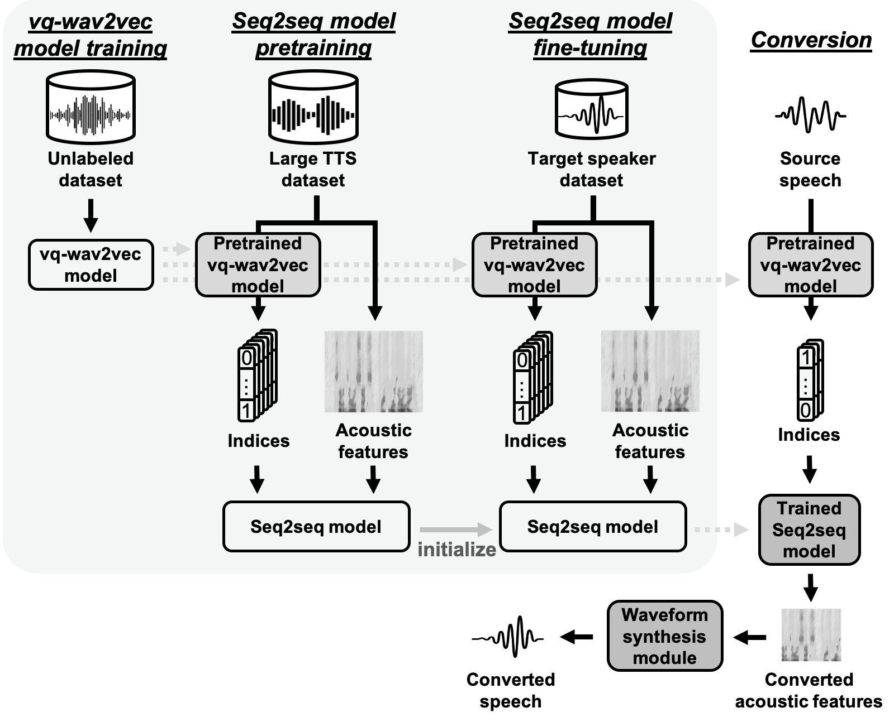

Abstract: We present a novel approach to any-to-one (A2O) voice conversion (VC) in a sequence-to-sequence (seq2seq) framework. A2O VC aims to convert any speaker, including those unseen during training, to a fixed target speaker. We utilize vq-wav2vec (VQW2V), a discretized self-supervised speech representation that was learned from massive unlabeled data, which is assumed to be speaker-independent and well corresponds to underlying linguistic contents. Given a training dataset of the target speaker, we extract VQW2V and acoustic features to estimate a seq2seq mapping function from the former to the latter. With the help of a pretraining method and a newly designed postprocessing technique, our model can be generalized to only 5 min of data, even outperforming the same model trained with parallel data.
Proposed method

Dataset
We conducted all our experiments on the CMU Arctic database.
A male speaker (bdl) and a female speaker (clb) were chosen as source speakers, and a female speaker (slt) was chosen as the target speaker.
Models
Source, Target: Natural speech of the source and target speakers.
Analysis-Synthesis: Analysis-synthesis samples from the Parallel WaveGAN vocoder.
VTN: Voice Transformer Network (a.k.a. Transformer-VC) trained with parallel data.
Proposed: The proposed method with vq-wav2vec for M2O VC only using data from the target speaker.
Speech Samples
Transcription: There were stir and bustle, new faces, and fresh facts.
Model
clb(F)-slt(F)
bdl(M)-slt(F)
Source
Target
Analysis-Synthesis
VTN (932)
VTN (80)
Proposed (932)
Proposed (80)
Transcription: And there was Ethel Baird, whom also you must remember.
Model
clb(F)-slt(F)
bdl(M)-slt(F)
Source
Target
Analysis-Synthesis
VTN (932)
VTN (80)
Proposed (932)
Proposed (80)
Transcription: He had become a man very early in life.